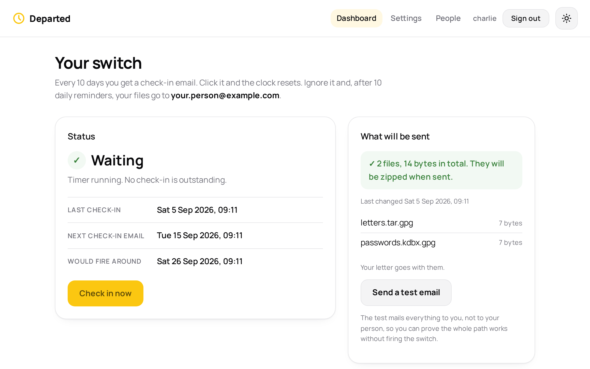

If you stop answering,
one person receives
what you left them.
Departed sits on a computer in your own home and waits. Every ten days it emails to ask whether you are still here, and one click sends it back to waiting.
You choose one person. You lock the files yourself, before they ever reach it, and you give that person the key by hand.
Twenty-one days
Nothing happens quickly here. It is slow on purpose, so that an ordinary fortnight away is never mistaken for something worse.
-
On the tenth day an email arrives, with one link in it.
It asks nothing of you but a click. The clock goes back to the beginning and a note comes to say you were heard. That link then retires, so an old email can never answer on your behalf.
-
If you don't click, it asks again the next day.
The same email, once a day, for ten more days. Any one of them will do. There is a great deal of room in that for a holiday, or a hospital stay, or a phone left in a drawer.
-
On the twenty-first day it sends what you prepared.
One email, to the one person you named, carrying your locked files exactly as you left them. You are told as well, in case you are simply somewhere without a signal.
-
Then it stops.
It does not send again or keep asking. It has done the only thing it was ever made to do.
What it never knows
The files are locked before Departed ever has them, with a passphrase of your own. You can do that with your own tool if you have one. If you would rather not, the page itself will do it: the locking happens in your browser, on your machine, and only the sealed result is handed over. Either way it never looks inside and it never holds the key.
It is a courier carrying a sealed envelope. If somebody stole the machine tomorrow, or read the email on its way, they would have the sealed envelope and nothing else.
The person you chose already has the key. You gave it to them yourself, out loud, in a room.
You can write them a few words as well, to go in the body of the email. That much the program can read, so it is for a greeting rather than for anything private.
One page, and everything on it
Nothing is set up by editing files on a server. You open it in a browser, sign in, and fill in a form. This is what it looks like.

- The settings page
- Your email address, your person's, your mail server, and how long the whole thing should take. The mail password is kept encrypted and never shown back to you.
- Your files
- Choose them and the page locks them there and then, in your browser, and gives you the passphrase once. Or bring your own encrypted file if you would rather do that part yourself.
- Your letter
- A few words to go in the body of the email that carries your files. This much the program can read, so it is for a greeting rather than for anything private.
- Everybody in the house
- Several people can share one copy. Each has their own account, their own settings, their own files and their own timer, and nobody can see anybody else's.
Somebody has sent you one of these already? Open it here. That page works in your own browser, uploads nothing, and tells you the plain command to use instead if you would rather not trust a web page with it.
If something goes wrong
Most of the work in a thing like this is what it does on a bad day.
- It sends by mistake
- You are emailed too, the moment it happens. Change the passphrase, click once, and it starts again from the beginning. A false alarm costs you an afternoon.
- There is nothing to send
- It will not send an empty envelope. If you have not added any files when the day comes, it holds everything and writes to you instead, once a day, until there is something there.
- The message will not go
- A mail server that is down does not end the matter. It tries again every few minutes for as long as it takes, and never records the thing as done until it truly is.
- The machine was switched off
- It does not come back and act on a stale clock. It works through the whole run of asking, one day at a time, before it does anything final.
It lives in your house
Departed runs on a small computer of your own, on your own network, reachable only by you. There is no company holding your files and no account to lose. Nobody can be asked to hand over what they were never given.
It is free, and the whole of it is open to read, so anyone you trust can check what it does and what it cannot do.
Putting it on your server
You need a machine at home running Docker. There is nothing to configure on the server: two short files, one command, and everything else is done in the browser afterwards.
-
Make a folder for it
This one folder holds everything: the database, your files and the log. Back it up and you have the lot. The app runs as an ordinary user rather than as root, which is why the folder is handed to user 1000.
sudo mkdir -p /opt/departed sudo chown -R 1000:1000 /opt/departed -
Save this as
/opt/departed/docker-compose.ymlThere is nothing to change in it, and no settings in it. Notice what is missing: no email addresses, no mail server, no passwords.
# Nothing in here is a setting. Email addresses, the mail server, the timing and # your files all live inside the app, on its settings page. services: departed: image: ghcr.io/lightmorphic/departed:latest container_name: departed restart: unless-stopped ports: - "${DEPARTED_PORT:-4160}:8080" volumes: - ${DEPARTED_DATA:-/opt/departed}:/data -
Save this as
/opt/departed/.envTwo lines, and neither is a secret. Change the port if something else is already using it.
# Copy this to .env. There are only two things here, and neither is a secret. # Everything else is set on the app's own settings page in the browser. # The port you open in the browser: http://<your-server>:4160 DEPARTED_PORT=4160 # The folder on the server that holds the database, your files and the log. # Back this folder up and you have everything. DEPARTED_DATA=/opt/departed # Optional. Largest single upload, in megabytes. Most mail servers refuse # attachments over about 25 MB anyway. # MAX_UPLOAD_MB=64 -
Start it
cd /opt/departed docker compose up -d -
Open it and make your account
Go to
http://your-server:4160. The first visit asks you to pick a username and a password, and that first account can add other people later. -
Fill in the settings page
Your email address, your person's email address, your mail server, and how long the whole thing should take. Then add your locked files and, if you want, write your letter.
When it looks right, press Send a test email. It posts everything to you rather than to them, so you can watch it arrive before you ever rely on it.
Everybody in the house, on one copy
Each person gets their own account, their own settings, their own files and their own timer. Nobody can see anybody else's, and the person who set it up can add and remove accounts.
Reaching it from outside the house
Departed has no business being on the open internet, and it does not try to put itself there. Keep it on your own network and reach it from outside through whatever private connection you already use for your server. That part is yours to set up, and there are several good ways to do it.
Whatever address that gives you, put it in the web address setting. The links in your check-in emails are built from it, so it has to work from wherever you read your email. Signing in is a second lock, not the first one.
Keeping it up to date
cd /opt/departed
docker compose pull
docker compose up -d